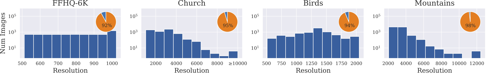
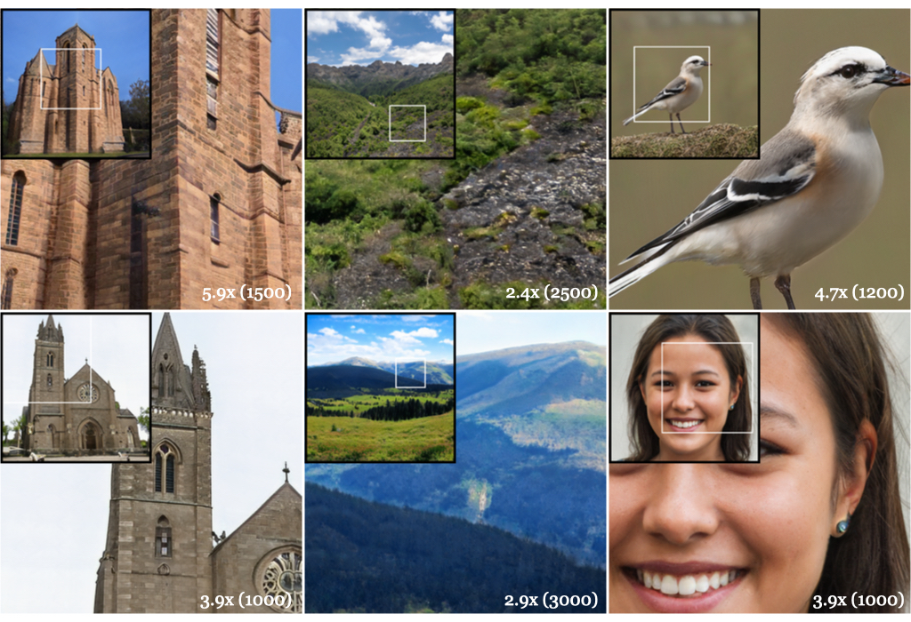

Any-resolution training for high-resolution image synthesis
Lucy Chai
Michael Gharbi
Eli Shechtman
Phillip Isola
Richard Zhang
MIT Computer Science and Artificial Intelligence Laboratory & Adobe Research
[Paper]
[Code]
[Bibtex]
Skip to:
[Abstract]
[Supplementary Video]
[Random Samples]

Abstract:
Generative models operate at fixed resolution, even though
natural images come in a variety of sizes.
As high-resolution details are downsampled away, and low-resolution images
are discarded altogether, precious supervision is lost.
We argue that every pixel matters and create datasets with variable-size
images, collected at their native resolutions.
Taking advantage of this data is challenging; high-resolution processing is
costly, and current architectures can only process fixed-resolution data.
We introduce continuous-scale training, a process that samples
patches at random scales to train a new generator with variable
output resolutions.
First, conditioning the generator on a target scale allows us to generate
higher resolutions images than previously possible, without adding layers to the
model.
Second, by conditioning on continuous coordinates, we can sample patches that
still obey a consistent global layout, allowing for scalable training.
Controlled FFHQ experiments show our method takes advantage of the
multiresolution training data better than discrete multi-scale
approaches, achieving better FID scores and cleaner
high-frequency details.
We also train on other natural image domains including churches,
mountains, and birds, and demonstrate arbitrary scale synthesis with
both coherent global layouts and realistic local details,
going beyond 2K resolution in our experiments.
Summary
The typical preprocessing pipeline for unconditional image synthesize resizes all images to the same size, which discards available pixels. We propose a training procedure which can leverage these additional pixels from higher resolution images for image synthesis.

We treat an image as a continuous 2D surface, where real images and synthesized samples correspond to discretizations of this surface. To deal with images of varied sizes, we sample patches of a fixed size at continuous resolutions and locations.

Our training pipeline can handle images of different resolutions. We resize the FFHQ dataset to validate design decisions, and additionally collect images from Flickr to build our multi-size datasets.

By setting the coordinate grid appropriately, our generator is capable of synthesizing additional details as the resolution increases.

As we extrapolate on this coordinate grid, the generator tends to preserve edges while textures deteriorate first.
We can modify our approach to synthesize on a cylindrical image plane, which naturally creates 360 degree panoramas.
Click here to view in video form.


Supplementary Video
Click here to view our supplementary video!

Random Samples
Click on the panels below to view randomly generated patches from our model in comparison to super-resolution models. Our model is trained to synthesize images at continuous resolutions from random noise samples, and thus is not directly supervised with low-resolution and high-resolution pairs from real images.
Reference
L Chai, M Gharbi, E Shechtman, P Isola, R Zhang. Any-resolution training for high-resolution image synthesis. arXiv 2022.
@article{chai2021anyresolution,
title={Any-resolution training for high-resolution image synthesis.},
author={Chai, Lucy and Gharbi, Michael and Shechtman, Eli and Isola, Phillip and Zhang, Richard},
booktitle={arXiv preprint arXiv:XXXX.XXXXX},
year={2022}
}
Acknowledgements:
We would like to thank XXX for proofreading the paper. We thank Taesung Park for help in dataset collection. LC is supported by the National Science Foundation Graduate Research Fellowship under Grant No. 1745302 and Adobe Research Fellowship. This work was started while LC was an intern at Adobe Research.
Recycling a familiar template ;).